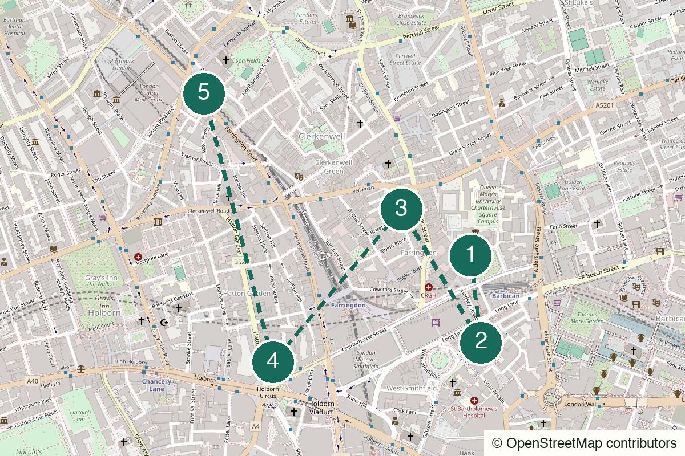

London Not yet field-walked
King’s Cross
A canal-side start, a quiet churchyard and an easy pub finish for two people who do not need a big plan.
Start King’s Cross St Pancras
Not yet field-walked · verify live details
Short streets, old rooms and enough food to make the evening feel considered.
No field notes from readers yet — share one if you walk it.
Farringdon Elizabeth line and Underground – Meet outside the Cowcross Street entrance.
Charterhouse Square
Open the whole walk (opens in a new tab)
This is most honestly a weekday-evening route. Verify weekend pub hours, current noise, prices and booking requirements.
We never ask for your location.
Begin with one short old-street circuit, take a drink in a verified room, then choose between a proper meal and an easy exit. The route spends money on comfort rather than spectacle.
Not cheap-cheap and not a sprawling adventure; the value is compression.
Strong for an early established date: easy exit first, proper meal if the mood holds.
Good for two to four; larger groups should book rather than improvise.
Possible, but the route earns more with conversation.

Charterhouse Square, London EC1M
From the start Leave Farringdon towards Charterhouse Square; it is the most cinematic first old-street leg.
Cobbles, plane trees and the Charterhouse: enough atmosphere before anyone has to decide what counts as history.
Walk here from the station to Farringdon → Charterhouse Square (opens in a new tab)
St Bartholomew the Great, West Smithfield, London EC1A 9DS
From the previous stop Walk via Cloth Fair to St Bartholomew the Great. Check entry arrangements before relying on the church interior.
An old house, the oldest parish church in London and a large atmospheric return for a short detour.
Walk from the previous stop to Cloth Fair + St Bartholomew the Great (opens in a new tab)
St John’s Gate, Clerkenwell, London EC1M
From the previous stop Continue north through Clerkenwell Green to the Tudor gate.
The Green is not green and never was – a useful Clerkenwell fact to deploy. The gate is the photo stop.
Walk from the previous stop to Clerkenwell Green + St John’s Gate (opens in a new tab)
Clerkenwell, London EC1
From the previous stop Use a live map for the chosen room: Ye Olde Mitre in Ely Court, The Jerusalem Tavern on Britton Street, or the more weekend-safe Three Kings in Clerkenwell Close.
Choose only after checking current hours. The first two are historically weekday-led; The Three Kings is the practical weekend fallback.
Walk from the previous stop to A verified old room (opens in a new tab)
Farringdon Road / Exmouth Market, London EC1
From the previous stop For the committed version, walk to The Quality Chop House; The Eagle or Exmouth Market are the lower-commitment alternatives.
Make this optional: confirm booking, price and kitchen hours. If the first drink is the right ending, take the easy Farringdon exit instead.
Walk from the previous stop to Optional proper meal (opens in a new tab)
Nearest practical station: Farringdon
Everything in this skeleton sits within roughly twelve minutes of Farringdon, so the exit remains deliberately simple.
Weekday evening
This is the one prototype where a proper meal can be central; verify price and booking.
The low-commitment after-work version.
The considered evening version.
Shorten the street circuit and move between two close indoor stops.
Take the proper meal version or continue towards Barbican.
End after the first drink and return to Farringdon.
Central London, with the volume turned down.
Help keep it useful
Closed gates, changed hours and the point where you bailed are more useful than polite applause.